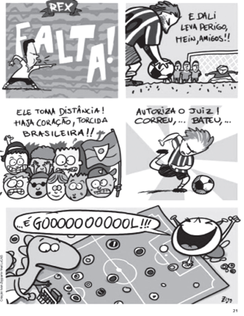
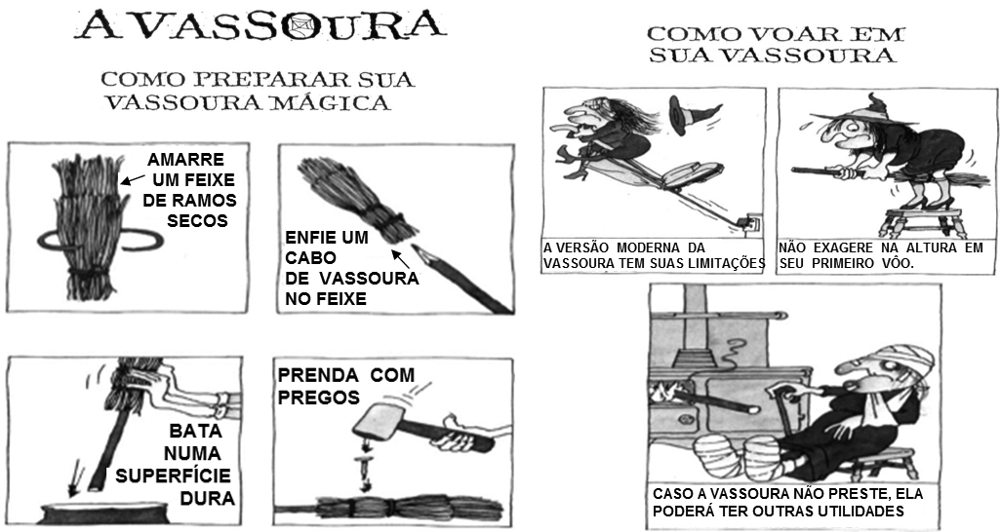
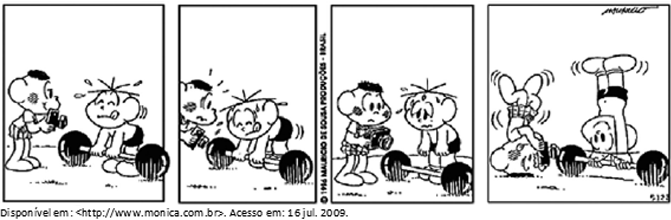
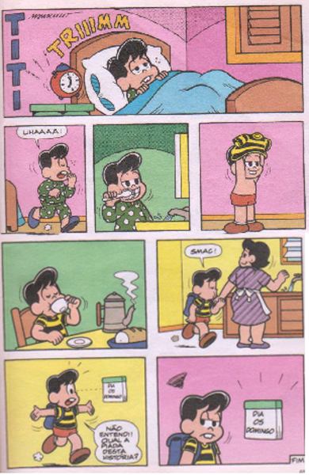

Observe a tirinha abaixo:

Esse texto é engraçado porque
Oberve o anúncio abaixo:

No texto, uma PASSAGEM ENGRAÇADA é
O texto é divertido, PRINCIPALMENTE , porque
Leia o texto abaixo
A professora pergunta aos alunos:
– Se eu for à feira e comer 4 peras, 3 bananas, 10 laranjas e 1 melancia, qual será o resultado? Do fundo da sala, Joãozinho grita:
– Uma dor de barriga!
BRUNABIANCA. Piada da lógica do Joãozinho. In: Piadas. 2014. Disponível em:Esse texto é engraçado porque
Era uma vez um menino triste, magro e barrigudinho. Na soalheira danada de meio-dia, ele estava sentado na poeira do caminho, imaginando bobagem, quando passou um vigário a cavalo.
— Você, aí, menino, para onde vai essa estrada?
— Ela não vai não: nós é que vamos nela.
— Engraçadinho duma figa! Como você se chama?
— Eu não me chamo, não, os outros é que me chamam de Zé.
MENDES CAMPOS, Paulo, Para gostar de ler - Crônicas. São Paulo: Ática, 1996, v. 1 p. 76.Há traço de humor no trecho:
Observe a tirinha abaixo:

O humor desse texto está
Ele foi cavando, cavando, cavando, pois sua profissão – coveiro – era cavar. Mas, de repente, na distração do ofício que amava, percebeu que cavara demais. Tentou sair da cova e não conseguiu. Levantou o olhar para cima e viu que, sozinho, não conseguiria sair. Gritou. Ninguém atendeu. Gritou mais forte. Ninguém veio. Enrouqueceu de gritar, cansou de esbravejar, desistiu com a noite. Sentou-se no fundo da cova, desesperado. A noite chegou, subiu, fez-se o silêncio das horas tardias. Bateu o frio da madrugada e, na noite escura, não se ouvia um som humano, embora o cemitério estivesse cheio de pipilos e coaxares naturais dos matos. Só pouco depois da meia-noite é que lá vieram uns passos. Deitado no fundo da cova o coveiro gritou. Os passos se aproximaram. Uma cabeça ébria apareceu lá em cima, perguntou o que havia: ― “O que é que há?”.
O coveiro então gritou desesperado: ―Tire-me daqui, por favor. Estou com um frio terrível!”. ― Mas, coitado!” condoeu-se o bêbado ―Tem toda razão de estar com frio. Alguém tirou a terra de cima de você, meu pobre mortinho!” E pegando a pá, encheu-a de terra e pôs-se a cobri-lo cuidadosamente.
Moral: Nos momentos graves é preciso verificar muito bem a quem se apela.
FERNANDES, Millôr. Disponível em http://citador.weblog.com.pt/arquivo/109176.htmlO que faz esse texto ficar engraçado?
O Juquinha e outros dois garotos foram levados ao diretor do zoológico por causa de uma baita briga.
O diretor começa o interrogatório:
— Quem é você e por que está aqui?
— Eu sou Juquinha e joguei amendoim nos elefantes.
Então o diretor perguntou ao segundo:
— Quem é você e por que está aqui?
— Eu sou Joãozinho e joguei amendoim nos elefantes.
Então o diretor perguntou ao terceiro menino, que estava todo machucado:
— Quem é você e por que está aqui?
Fonte: DOMENICO, Guca; SARRUMOR, Laert. O elefante. In: Um campeonato de piadas. São Paulo: Nova Alexandria, 1999.O texto é engraçado porque:
Observe a HQ abaixo:

O que torna a história engraçada é que o personagem Titi
João e José, dois velhos amigos que gostavam de pescar, comparavam suas proezas esportivas, como sempre um procurando superar o outro.
— Outro dia eu pesquei um bagre — disse João —, e nem queira saber, era o maior bagre que olhos mortais já viram. Pesava pelo menos duzentos quilos.
— Isso não é nada — respondeu José. — Outro dia eu estava pescando, e adivinhe o que veio pendurado no meu anzol? Uma lâmpada de navio, com uma data gravada nela: A.D. 1392! Imagine só: cem anos antes da descoberta da América por Cristóvão Colombo. E não é só isso: dentro da lâmpada havia uma luz, e ela ainda estava acesa!
João olhou para a cara de José e ficou calado por um momento. Mas logo sorriu e disse:
— Olhe aqui, José, vamos entrar num acordo. Eu abato 198 quilos do meu bagre. E você apaga a luz da sua lâmpada, está bem?
Fonte: BELINKY, Tatiana. Lorotas de Pescador. In: ___. Mentiras... e Mentiras. 2. ed. São Paulo: Companhia das Letrinhas. 2005, p. 23.O efeito de humor desse texto é produzido especialmente pelo fato de